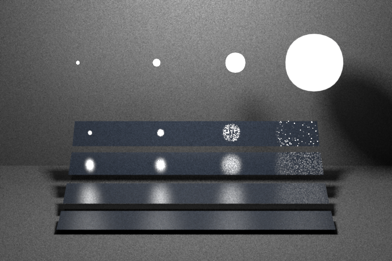

**Homework 5**
Student name: Samuel Laporte
Sciper number: 366873
Microfacet BRDF (30 points)
===========================
Evaluating the Microfacet BRDF
------------------------------
The evaluation of the microfacet was pretty straightfoward. I just had to follow the equation provided by the homework and it was document
Sampling the Microfacet BRDF
------------------------------
The sampling part was a bit more difficult for me. I had some difficulty figuring out how to scale the uniform variable as demanded by the homework. But once my friend help me with this problem the rest was pretty much just following the instruction from the homework
Validation
----------
Ajax (smooth):
Ajax (rough):
Brute force path tracer (15 points)
===================================
Design choice
The implementation revolve into the naive way of doing path tracing. The key principle is just to make the ray bounce and hope to hit a light source before terminating the ray. In order to do that here is the logic behind the implementation of the Li()
Check if we hit the scene with our ray. If not we exit the loop
Apply the russian roullette with the probability defined by the homework. Hi the russian roulette pass, we exit the loop. If not, we divide the throughput by the probability
Check if the hit surface is an emitter. If it is, add the radiance value multiplied by the throughput to the result
Sample a new direction from the hit surface and update some value (throughput, ray)
Go back to 1
Once we are out of the loop we just have to return the result
Validation
----------
Cornell box:
Veach material test scene:
Table test scene:
Path tracer with next event estimation (25 points)
==================================================
For this part, I decided to revisit my code a bit to make it more clean to read for me. I implemented a function for the light sampling part in order to the Li function to be more comprehensible
Based on the brdf book, when using the ems method, we need to account for 2 special case if the ray hit an emitter. Either it's the first ray cast into the scene, or the ray come from a specular surface. If it's neither of those case then we don't have to account for the radiance of this emitter
The light sampling part is very similar to the whitted class we implemented on the previous homework so I will skip the detail on that.
I encountered a 2 bug on this part of the homework. First, the result were not as clean a I wanted because on the preprocess of the class (where we put the pmf of all the emitter), I was appending the total surface area and using the `getSum()` method. But once I change all of that to the correct way, I was having a sneaky bug where the integrator was flagging `nan` again. The culprit: my light_pdf variable was cast as an integer instead of a float because I did `1 / m_light_pdf.size()` instead of `1.0f / m_light_pdf.size()`
Validation
----------
Cornell box:
Veach material test scene:

Table test scene:
Path tracer with Multiple Importance Sampling (30 points)
=========================================================
I feel like the that the lecture related for this part of the homework was not providing sufficient knowledge to implement this feature. I had to rely on a paper I fortunately found on the web in order to acheive this
Check if we hit the scene or else break the loop
Check if the hit surface is diffuse. If it is, do the lightSampling
Check if the hit surface is an emitter
Check if depth == 0 or the ray come from a specular object. If yes, then add the emitter radiance
Else calculate the light with the mis_weight
Calculate new ray and upadte some value
Russian roulette
Validation
----------
Cornell box:
Veach material test scene:
Table test scene:
Feedback
========
We would appreciate any comments or criticism to improve the projects in future years--naturally, this part will not be graded. Examples of information that is useful to us includes:
* How much time did you spend on the assignment? How was it divided between designing, coding, and testing?
* What advice should we have given you before you started?
* What was hard or surprising about the assignment?
* What did you like or dislike? What else would you change?